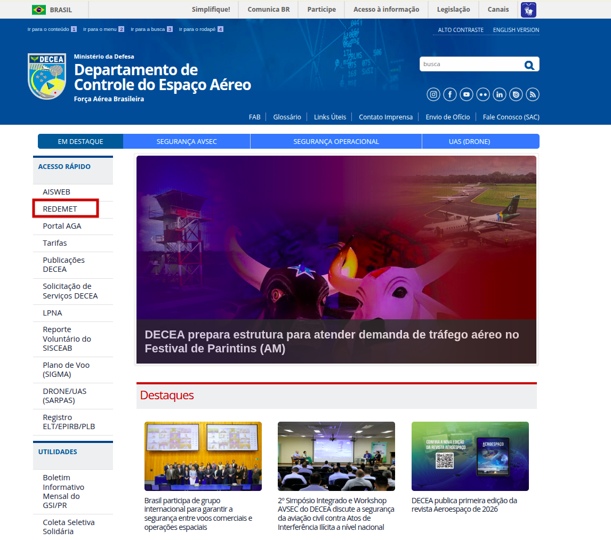
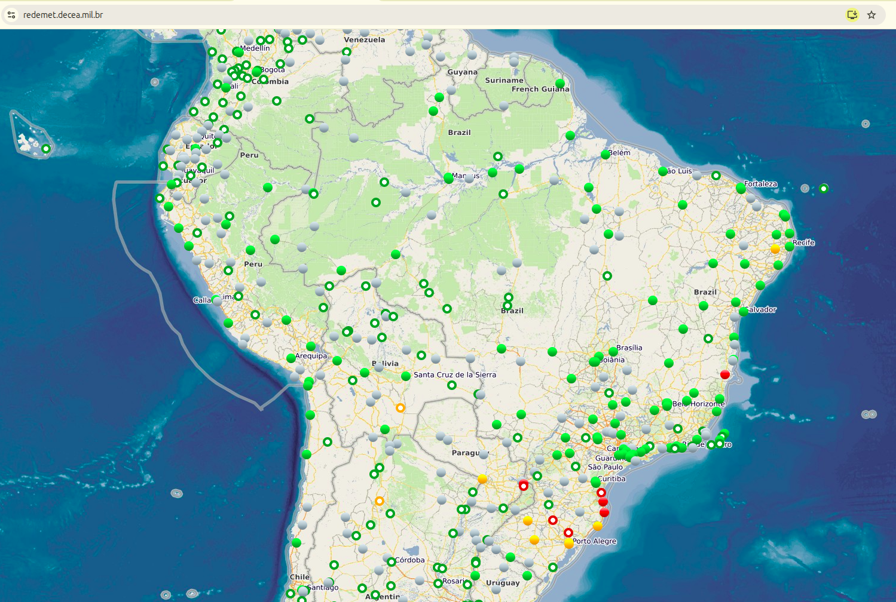
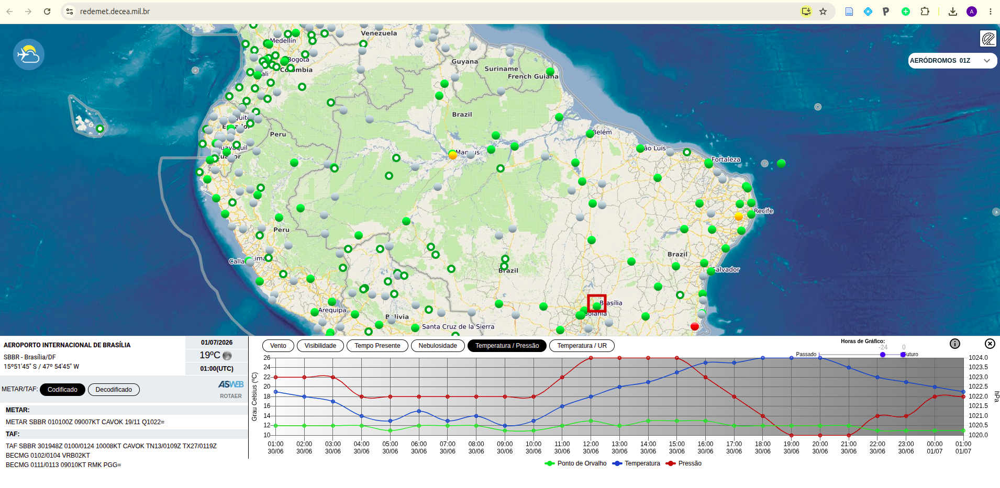
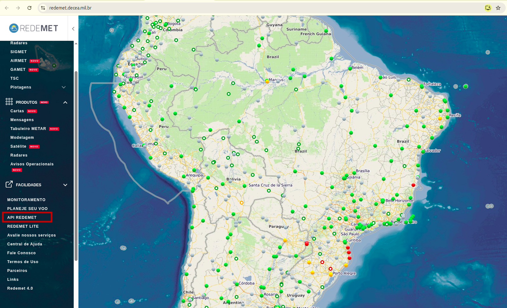
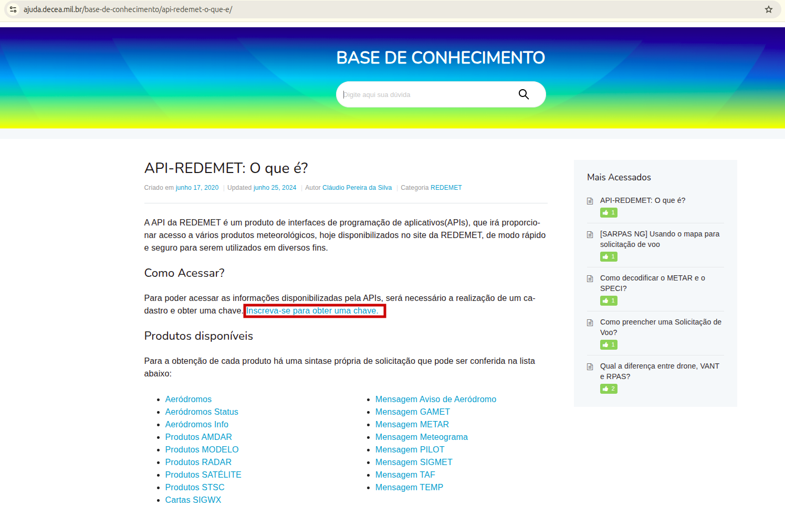
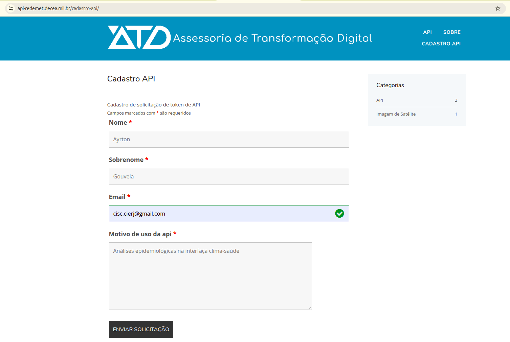
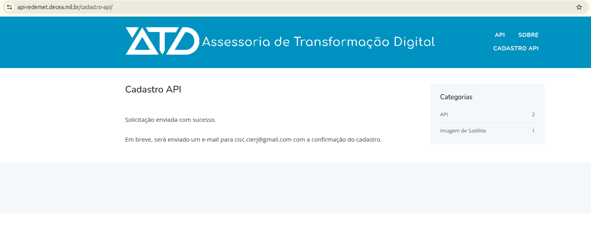
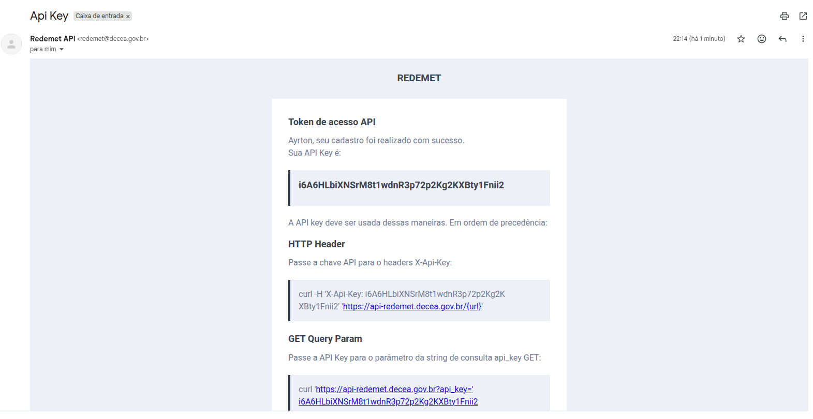

8 Parte 1 — Conhecendo a REDEMET
Nesta prática, vamos usar a REDEMET (Rede de Meteorologia do Comando da Aeronáutica), mantida pelo DECEA, como fonte de variáveis meteorológicas (temperatura, ponto de orvalho e pressão) para cruzar com os dados de saúde trabalhados nas práticas anteriores.
Por que a REDEMET? É uma fonte pública, gratuita e com série histórica extensa (desde 2003 para mensagens METAR), organizada por estação meteorológica — geralmente localizada em aeroportos. Isso significa que, ao invés de um código de município, trabalharemos com o código ICAO da estação mais próxima do seu município de interesse (ex.: SBBR para Brasília, SBGL para o Rio de Janeiro).
Caso já tenha uma chave de API da REDEMET em mãos, pule para a Parte 3 desta prática!
8.0.1 1.1 Acessando pelo site do DECEA
A REDEMET é acessada a partir do site institucional do DECEA (Departamento de Controle do Espaço Aéreo).
Na página inicial, localize o link de acesso à REDEMET, geralmente na seção de serviços meteorológicos.

8.0.2 1.2 A interface da REDEMET
Ao entrar na REDEMET, você verá um mapa do Brasil com as estações meteorológicas disponíveis, a maioria localizada em aeroportos.

Ao selecionar uma estação — no exemplo abaixo, a de Brasília (SBBR) — a própria interface já exibe gráficos de temperatura, ponto de orvalho e pressão para consulta rápida, sem necessidade de programação.

Essa visualização direta no site é útil para uma checagem rápida ou para conferir se os dados que você baixar via API “batem” com o que a REDEMET mostra. Mas, para automatizar o processo e integrá-lo à sua análise em R, vamos usar a API.
8.1 Parte 2 — Obtendo acesso à API
8.1.1 2.1 Localizando a API
Na mesma interface, há um link de acesso à API de dados da REDEMET.

A página inicial da API explica seu funcionamento e indica onde solicitar uma chave de acesso.

8.1.2 2.2 Solicitando a chave
O formulário de solicitação pede Nome, Sobrenome, Email e o motivo de uso da API.

Após enviar, a página confirma que a solicitação foi efetuada com sucesso.

Em seguida, chega um email na conta informada, contendo a chave de API e o cabeçalho HTTP necessário para autenticação.

Nunca compartilhe sua chave de API publicamente (em repositórios, prints, ou em código enviado a terceiros). Se isso acontecer, gere uma nova chave assim que possível. Ao longo desta prática, vamos guardar a chave numa variável de ambiente, e não diretamente no script.
8.2 Parte 3 — Baixando dados via R
8.2.1 3.1 Preparando o ambiente
install.packages(c("httr", "jsonlite", "dplyr", "stringr", "lubridate", "ggplot2"))
library(httr)
library(jsonlite)
library(dplyr)
library(stringr)
library(lubridate)
library(ggplot2)Chave de teste A chave abaixo é uma chave de teste, criada apenas para validar o código durante a preparação desta prática. Troque por Sys.getenv("REDEMET_API_KEY") e oriente cada participante a solicitar sua própria chave (Parte 2).
8.2.2 3.2 Configuração
api_key <- "i6A6HLbiXNSrM8t1wdnR3p72p2Kg2KXBty1Fnii2" # chave de teste — substituir
localidade <- "SBBR" # código ICAO da estação (ver Parte 1)
data_ini <- "2026010100" # formato AAAAMMDDHH
data_fim <- "2026063000"Em produção (ou ao disponibilizar o material aos participantes), guarde a chave no arquivo .Renviron em vez de deixá-la no script. Para editar esse arquivo, rode usethis::edit_r_environ() no console e adicione a linha:
REDEMET_API_KEY="sua_chave_aqui"Depois, reinicie o RStudio e troque a linha acima por api_key <- Sys.getenv("REDEMET_API_KEY").
8.2.3 3.3 Baixando e interpretando as mensagens METAR
A REDEMET disponibiliza os dados meteorológicos no formato METAR — um padrão internacional usado na aviação. Cada mensagem é uma linha de texto codificada, por exemplo:
METAR SBBR 010000Z VRB02KT 9999 -RA FEW015 OVC100 20/18 Q1018=Lendo um METAR: 20/18 é temperatura/ponto de orvalho em °C (temperaturas negativas aparecem como M05, por exemplo M05/M08); Q1018 é a pressão QNH em hPa; -RA indica chuva fraca; VRB02KT é vento variável a 2 nós. O METAR não traz volume de precipitação em mm — apenas um código qualitativo do tempo presente.
Precisamos, portanto, de uma função para extrair essas variáveis de cada mensagem:
parse_metar <- function(mens) {
partes <- str_split(mens, " ")[[1]]
temp_token <- partes[str_detect(partes, "^M?\\d{2}/M?\\d{2}$")]
pressao_token <- partes[str_detect(partes, "^Q\\d{4}=?$")]
if (length(temp_token) > 0) {
par <- str_split(temp_token[1], "/")[[1]]
temperatura <- as.numeric(str_replace(par[1], "M", "-"))
ponto_orvalho <- as.numeric(str_replace(par[2], "M", "-"))
} else {
temperatura <- NA
ponto_orvalho <- NA
}
pressao <- if (length(pressao_token) > 0) {
as.numeric(str_remove(pressao_token[1], "[Q=]"))
} else {
NA
}
tibble(temperatura = temperatura, ponto_orvalho = ponto_orvalho, pressao = pressao)
}8.2.4 3.4 Requisição à API
O endpoint de mensagens METAR retorna os resultados paginados. A função abaixo percorre todas as páginas do período solicitado:
baixar_metar <- function(localidade, data_ini, data_fim, api_key) {
pagina <- 1
resultados <- list()
repeat {
resposta <- GET(
url = paste0("https://api-redemet.decea.mil.br/mensagens/metar/", localidade),
query = list(
api_key = api_key,
data_ini = data_ini,
data_fim = data_fim,
page = pagina
)
)
conteudo <- fromJSON(
content(resposta, as = "text", encoding = "UTF-8"),
simplifyDataFrame = FALSE
)
dados_pagina <- conteudo$data$data
if (length(dados_pagina) == 0) break
resultados[[pagina]] <- dados_pagina
ultima_pagina <- conteudo$data$last_page
if (is.null(ultima_pagina) || pagina >= ultima_pagina) break
pagina <- pagina + 1
}
bind_rows(unlist(resultados, recursive = FALSE))
}Requisições em excesso podem ser bloqueadas. A API tem limite de uso — se o período solicitado for muito longo (vários anos, por exemplo), prefira baixar em blocos menores e combinar os resultados depois com bind_rows().
8.2.5 3.5 Montando o dataframe
brutos <- baixar_metar(localidade, data_ini, data_fim, api_key)
metar_df <- brutos %>%
rowwise() %>%
mutate(
datahora = ymd_hms(validade_inicial),
parse_metar(mens)
) %>%
ungroup() %>%
select(localidade = id_localidade, datahora, temperatura, ponto_orvalho, pressao) %>%
arrange(datahora)
glimpse(metar_df)8.2.6 3.6 Gráfico de série temporal
ggplot(metar_df, aes(x = datahora)) +
geom_line(aes(y = temperatura, color = "Temperatura")) +
geom_line(aes(y = ponto_orvalho, color = "Ponto de orvalho")) +
labs(
title = paste("Série temporal —", localidade),
x = "Data/Hora (UTC)", y = "°C", color = "Variável"
) +
theme_minimal()8.2.7 3.7 Agregando por média diária
Como o METAR normalmente é reportado de hora em hora, pode ser útil resumir os dados em uma média diária:
metar_diario <- metar_df %>%
mutate(data = as_date(datahora)) %>%
group_by(data) %>%
summarise(
temperatura_media = mean(temperatura, na.rm = TRUE),
ponto_orvalho_medio = mean(ponto_orvalho, na.rm = TRUE),
pressao_media = mean(pressao, na.rm = TRUE),
.groups = "drop"
)
ggplot(metar_diario, aes(x = data)) +
geom_line(aes(y = temperatura_media, color = "Temperatura média")) +
geom_point(aes(y = temperatura_media, color = "Temperatura média")) +
geom_line(aes(y = ponto_orvalho_medio, color = "Ponto de orvalho médio")) +
geom_point(aes(y = ponto_orvalho_medio, color = "Ponto de orvalho médio")) +
labs(
title = paste("Média diária —", localidade),
x = "Data", y = "°C", color = "Variável"
) +
theme_minimal()A pressão (pressao_media) fica melhor num gráfico separado, já que sua escala (hPa) é bem diferente da escala de temperatura (°C).
8.2.8 3.8 Salvando os dados
saveRDS(metar_df, paste0("dados/metar_", localidade, ".rds"))
write_csv(metar_df, paste0("dados/metar_", localidade, ".csv"))8.3 Limitações a considerar
O que a REDEMET não oferece: como é uma fonte de meteorologia aeronáutica, a REDEMET não fornece volume de precipitação em mm. Se sua análise depende de dados quantitativos de chuva, a fonte mais adequada é o INMET (Instituto Nacional de Meteorologia), que disponibiliza estações automáticas com pluviômetro via sua própria API (BDMEP).
8.4 Exercício proposto
- Identifique o código ICAO da estação meteorológica mais próxima do seu município de interesse.
- Solicite sua própria chave de API, seguindo os passos da Parte 2.
- Baixe os dados METAR para um período de pelo menos 30 dias.
- Gere o gráfico de série temporal e o de média diária.
- Compare visualmente os dois: a média diária suaviza alguma variação importante que aparecia na série horária?